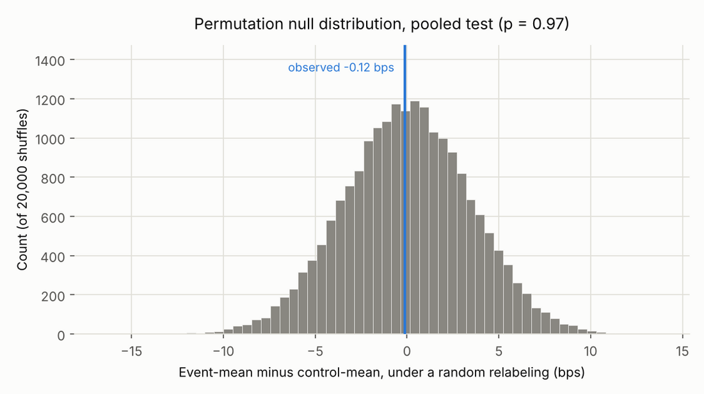
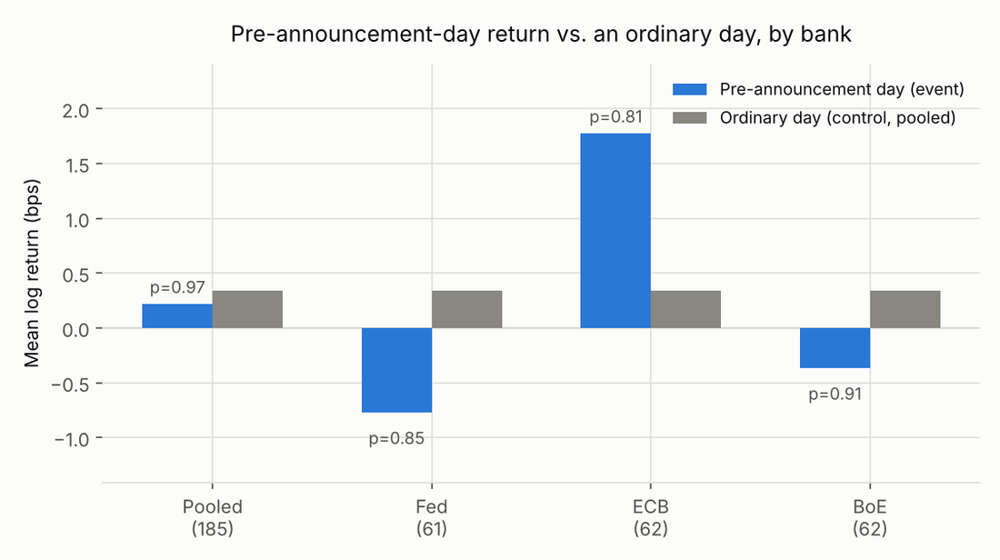

Do FX pairs drift before central bank decisions?
US equities are known to drift up before Fed announcements. I tested whether EUR/USD, GBP/USD and USD/JPY do something similar the day before the Fed, ECB and Bank of England announce rate decisions.
- 185
- scheduled meetings, 2019–2026
- p = 0.97
- pooled permutation test, 20,000 shuffles
- −1.06
- Sharpe of the walk-forward strategy
- 161
- trades, each out-of-sample by construction
Set-up
For each meeting I measured the return over the one full trading day before the decision, stopping short of decision day so the market's reaction to the announcement isn't mixed in. ECB and BoE meetings use EUR/USD and GBP/USD. Fed meetings use a dollar-strength index built from all three pairs.
The control group is every ordinary trading day, excluding any day within 3 days of another bank's meeting: 4,083 observations. Unscheduled emergency cuts, like March 2020, were left out because the market couldn't have known they were coming.
Testing for an effect
FX returns have fat tails, so instead of a t-test I used a permutation test: shuffle the event and control labels 20,000 times and see how often chance alone produces a difference as large as the real one. Pooled p = 0.97, and no bank on its own came close to significance. Splitting the sample in time, the effect also flips sign: +1.97 bps in 2019–2023, −3.89 bps in 2024–2026.


Trying to trade it anyway
Before each meeting, the strategy trades in the direction of that bank's average return at its previous meetings, with a minimum of 8 meetings of history and 1.5 bps cost each way. The .shift(1) in the signal makes sure a meeting's own outcome never feeds its own trade, so every one of the 161 trades is out-of-sample.
It lost money in every cut of the data: net −14.2%, Sharpe −1.06, maximum drawdown −15.2%. Returns were negative even before costs.
What I'd want a reviewer to notice
- Every setting (window, control buffer, minimum history) was fixed before I looked at results. Nothing was swept to find the best-looking value.
- When the backtest lost money, I didn't flip the sign of the rule. That would have been fitting to the result.
- The three pairs aren't three independent bets: the dollar is in all of them, so the strategy is closer to one dollar view than a diversified one.